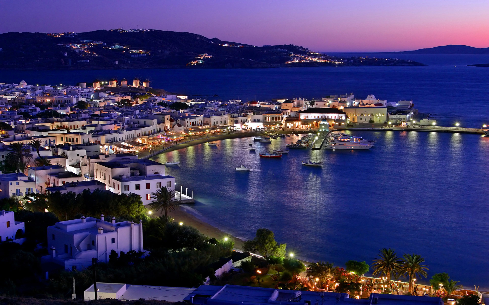

미코노스 섬은 그리스 에게 해 키클라데스 제도의 섬으로 산토리니와 함께 대표적인 관광지이다.
섬 이름은 그리스 신화의 아폴로의 손자 뮈코노스에서 기원했다.키클라데스 제도의 다른 섬들처럼 섬 내 집들이 아기자기한 사각형에 새하얀색 페인트칠이 되있는 것으로도 유명하다.
오늘날 관광지로 개발되기 이전에는 이 외에도 로쿰이 맛있고 풍차가 많기로 유명했다.
미코노스는 다양한 해변들로 이목을 끄는 섬이기도 하다. 가족들을 위한 비치와는 별개로 슈퍼 파라다이스 비치, 엘리아 비치 등은 게이비치로 알려져 있다. 누드비치라고 해서 꼭 알몸으로 들어가야 하는 것은 아니다.
들뜨고 화려한 섬에는 아이러니컬하게도 예배당이 400개를 웃돈다. 인구는
몇 천 명 수준인 것을 감안하면 꽤 많은 교회들이다. 그 중 다운타운 카스트로 언덕에 세워진 파라포르티아니 예배당이 가장 오래됐다. 흰 담장에 주홍빛 지붕의 예배당은 이방인들에게는 눈부신 풍경의 일부로 다가선다. 앤티크 마을로 알려진 아노 메라나 델로스, 레니아 섬의 유적을 간직한 고고학
박물관 등이 미코노스에서 두루 둘러볼 곳이다.